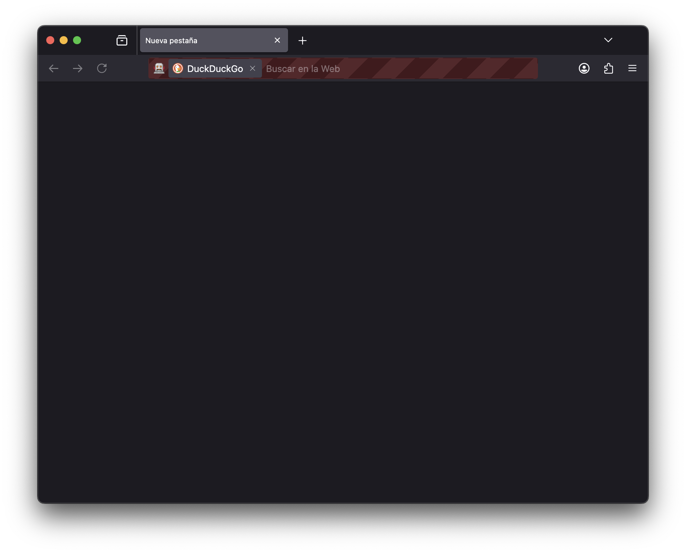

Automatizar el scroll de una página web desde R con {RSelenium}
16/12/2025
Para publicitar mi nueva página para aprender R gratis y de manera autodidacta, quise grabar un video mostrando los contenidos.
Pero al grabar el video, no me gustaba cómo quedaba cuando yo iba haciendo scroll manualmente, porque a veces me quedaban cortados los contenidos o se veía muy errático.
Así que hice lo que cualquier persona racional y ocupada haría, y automatizé el scroll con R, para que la página se moviera solita sin que yo intervenga. Así la grabación sale perfecta 💖
Para automarizar el scroll usé
el paquete {RSelenium}, que permite controlar un navegador web desde R.
Cargamos el paquete:
library(RSelenium)
Luego creamos un navegador:
# crear driver para controlar navegador
driver <- rsDriver(browser = "firefox",
port = 4560L, verbose = F,
chromever = NULL, phantomver = NULL)
remote <- driver$client
Se debería abrir una ventana de Firefox controlada por R!
Ahora navegamos al sitio:
remote$navigate(url = "https://bastianolea.github.io/aprende_r/")
Para hacer scroll, necesitamos ejecutar el siguiente comando de JavaScript en la página:
remote$executeScript("window.scrollBy(0, 300);")
Así la página baja 300 pixeles. Pero el scroll es instantáneo y se ve súper mal! ☹️

Si le agregamos behavior: 'smooth', hacemos scroll suave:
remote$executeScript("window.scrollBy({
top: 300, left: 0,
behavior: 'smooth'});")
¡Mucho mejor! Así podemos bajar poco a poco por el sitio.
Ahora quiero que el navegador haga scroll hasta llegar a un título específico de la página, así no tengo que ir haciendo scroll por cantidades específicas de pixeles. Para esto, tengo que encontrar el selector del elemento al que quiero llegar.
En este caso usaré el ID (#) de cada subtítulo. Por ejemplo, para llegar al título “Obtener R”, el selector es #obtener-r:
remote$executeScript("document.querySelector('#obtener-r').scrollIntoView({behavior: 'smooth'});")
Ahora el comando me lleva a un elemento específico, con suavidad 😌
¡Pero hay otro problema! 😣
Como la página tiene un menú arriba, al scrollear a un elemento, el elemento queda tapado por el menú. Así que necesito hacer scroll ligeramente más arriba que el elemento al que quiero llegar, de manera que se alcance a leer el título!
Entonces, en el siguiente comando primero se encuentra al elemento, se obtiene su posición vertical en la página, a la cual se le resta una cantidad de pixeles (en este caso 90), y luego se hace scroll a esa posición:
remote$executeScript("
const element = document.querySelector('#obtener-r');
const y = element.getBoundingClientRect().top + window.scrollY - 90;
window.scrollTo({ top: y, behavior: 'smooth' });")
Increíble, sinceramente.
Ahora estamos listos para hacer el boceto del desplazamiento por la página.
Pero antes, vamos a simplificar todo, metiendo esos comandos en funciones, porque no tiene sentido copiar y pegar 20 veces el mismo código!
# scroll hasta el elemento + offset
scrollear_elemento <- function(elemento = "#introduccion",
scroll = 90) {
remote$executeScript(paste("
const element = document.querySelector('", elemento, "');
const y = element.getBoundingClientRect().top + window.scrollY - ", scroll, ";
window.scrollTo({ top: y, behavior: 'smooth' });")
)
}
# scroll por pixeles exactos
scrollear_manual <- function(scroll = 90) {
remote$executeScript(paste("
window.scrollBy({
top:", scroll, ", left: 0,
behavior: 'smooth' });"))
}
# función de espera entre scrolls
espera <- function(largo = "larga") {
if (largo == "larga") {
Sys.sleep(1.1)
} else if (largo == "corta") {
Sys.sleep(0.7)
}
}
Creamos tres funciones: scrollear_elemento() para hacer scroll a un elemento específico, scrollear_manual() para bajar una cantidad exacta de pixeles, y espera() para pausar el código entre scrolls para dar tiempo para leer, y que puede ser una espera larga o corta.
Así, la escritura de los comandos es más rápida, y el código es más sencillo de leer. Solamente hay que ir poniendo las funciones una tras la otra.
El guión se ve más o menos así:
scrollear_elemento("#introduccion")
espera()
scrollear_elemento("#obtener-r")
espera()
scrollear_manual(400)
espera()
scrollear_elemento("#basico")
espera()
scrollear_manual(400)
espera("corta")
scrollear_manual(260)
espera("corta")
scrollear_manual(260)
espera("corta")
scrollear_manual(260)
espera("corta")
scrollear_elemento("#trabajando-con-datos-en-r")
espera()
Entonces la página va suavemente al primer subtítulo, espera, luego va a la siguiente, espera, baja un poquito para mostrar más contenido, espera, luego al siguiente… y así hasta recorrer toda la página.
Al llegar al final agregamos lo siguiente para subir hasta arriba1
# volver arriba
scrollear_elemento("body")
Entonces solamente queda poner a grabar la pantalla y ejecutar todas esas líneas al mismo tiempo, y listo, el sitio se presenta por sí solo de manera perfecta y yo puedo reclinarme a tomar café ☕️
-
no vamos a subir hasta abajo 🤪 ↩︎